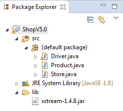
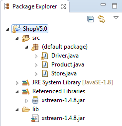
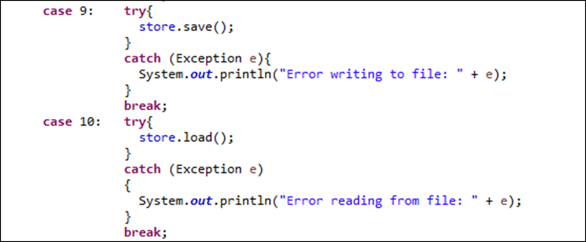

Objectives
On completion of this lab you should be able to:
Store objects into XML files and retrieve them from XML files (using ShopV4.0 as a starting point).
Apply this XML knowledge to another domain i.e. the DVD library.
Include Exception handling for invalid user input.
Developing Shop V5.0
In this practical, you will create a new project called ShopV5.0 in Eclipse, based on ShopV4.0. You will update the Driver, Store and Product classes (linked below) to enable the user to save the products to an XML file and also reload them (see Figure 1 for the updated menu system).

Menu Items 9 and 10: Saving and Loading Products
Create a new project called ShopV5.0.
Copy the following classes into the project:
Setting up the Component for Serializing
Download the following XStream jar file:
In Eclipse Package Explorer, create a new folder "lib". Do this be selecting the project, select "File->New->Folder". In the offered dialog, enter "lib" as the file name. Drag the xstream.jar file already downloaded into the lib folder (choose the option to copy the file). Your workspace should look like this:

Right click on the xstream-1.4.8.jar file and select "Build Path->Add to Build Path". Workspace should now look like this:

Updating Store Class to serialize and deserialize products
In the Store class, create these two new methods:
@SuppressWarnings("unchecked")
public void load() throws Exception
{
XStream xstream = new XStream(new DomDriver());
ObjectInputStream is = xstream.createObjectInputStream(new FileReader("products.xml"));
products = (ArrayList<Product>) is.readObject();
is.close();
}
public void save() throws Exception
{
XStream xstream = new XStream(new DomDriver());
ObjectOutputStream out = xstream.createObjectOutputStream(new FileWriter("products.xml"));
out.writeObject(products);
out.close();
}You will notice that they don't compile; they are missing some needed packages. Import the following packages at the top of the store class:
import java.io.FileReader;
import java.io.FileWriter;
import java.io.ObjectInputStream;
import java.io.ObjectOutputStream;
import com.thoughtworks.xstream.XStream;
import com.thoughtworks.xstream.io.xml.DomDriver;Adding load and save functionality to the menu
- In the Driver class, add options 9 and 10 to the printed menu:

- In the Driver class, make the following changes to implement case 9 and 10:

Testing the load and store
You should be in a position now to test.
Start your app and create two products e.g.
Please enter the product description: 24 inch monitor
Please enter the product code: 3423
Please enter the product cost: 129.99
Is this product in your current line (y/n): y
Please enter the product description: 14 inch monitor
Please enter the product code: 2322
Please enter the product cost: 109.99
Is this product in your current line (y/n): yNow try option 9 to save your products.
Refresh the package view in eclipse (F5) and you should now see a products.xml file.
Open this file and it should contain something similar to this:
<object-stream>
<list>
<Product>
<productName>24 inch monitor</productName>
<productCode>3423</productCode>
<unitCost>129.99</unitCost>
<inCurrentProductLine>true</inCurrentProductLine>
</Product>
<Product>
<productName>14 inch monitor</productName>
<productCode>2322</productCode>
<unitCost>109.99</unitCost>
<inCurrentProductLine>true</inCurrentProductLine>
</Product>
</list>
</object-stream>Exit your application and run it again.
Test option 10 and make sure that your products are loaded back into your products ArrayList correctly.
Shop V5.0 - Exceptions
In this practical, you will continue working on Shop V5.0.
Adding Exception Handling
In the Driver class, put a try and catch block around each potential read of data that could throw an exception (nextLine and next are ok).
Revisit your lecture notes on this topic if you need guidance.
Run your program and test your user input to ensure that your exception handling is correctly implemented.
Menu Driven DVD Specification (Phase 3)
In this practical, you will create a new project in Eclipse and copy in the code from DVDLibraryV2.0. You will then extend the code to allow the user to save the DVDs to an XML file and to load the DVDs from an XML file.
Create a new project called DVDLibraryV3.0.
In your Windows Explorer / Mac Finder, copy the src java files from DVDLibraryV2.0 to the src folder in your new project, DVDLibraryV3.0.
NOTE: a copy of the completed DVDLibraryV2.0 is available here.
Setting up the Component for Serializing
Download the following XStream jar file:
In Eclipse Package Explorer, create a new folder "lib". Do this be selecting the project, select "File->New->Folder". In the offered dialog, enter "lib" as the file name. Drag the xstream.jar file already downloaded into the lib folder (choose the option to copy the file).
Right click on xstream-1.4.8.jar and select "Build Path->Add to Build Path".
Library class
In the Library class:
add a load() method that throws an Exception. This method should read the contents of the dvd.xml file into the ArrayList of DVDs.
add a save() method that throws an Exception. This method should write the contents of the ArrayList of DVDs to the dvd.xml file.
Driver class - Save DVDs
Add a fifth option to the menu: 5) Save DVDs to dvds.xml.
within a try and catch block, call the save() method you wrote in the Library class.
Driver class - Load DVDs
Add a sixth option to the menu: 6) Load DVDs from dvds.xml.
within a try and catch block, call the load() method you wrote in the Library class.
Test your code
Run the project (as a Java Application).
Test option 5 and make sure that your DVDs are stored to an XML file.
You should have a new XML file that looks like this:
<object-stream>
<list>
<DVD>
<title>The Matrix</title>
</DVD>
<DVD>
<title>Sicario</title>
</DVD>
<DVD>
<title>The Grinch</title>
</DVD>
</list>
</object-stream>Exit your application and run it again.
Test option 6 and make sure that your DVDs are loaded back into your dvd ArrayList correctly.